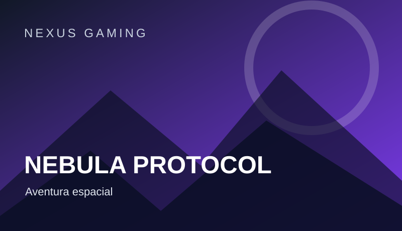
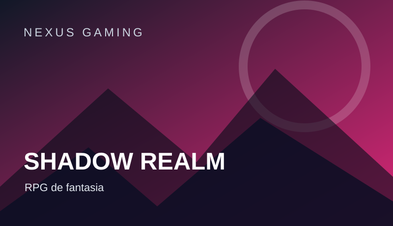
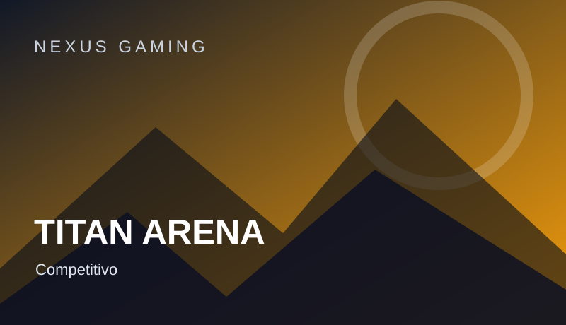

Aventura espacial
Nebula Protocol
Nota demonstrativa: 8.0/10Uma jornada de exploração em mundos desconhecidos. Destaques: direção de arte e proposta criativa. Ponto de atenção: curva de aprendizado.
Avaliações editoriais fictícias para demonstrar apresentação de reviews.

Uma jornada de exploração em mundos desconhecidos. Destaques: direção de arte e proposta criativa. Ponto de atenção: curva de aprendizado.

Velocidade, estratégia e circuitos de alta tecnologia. Destaques: direção de arte e proposta criativa. Ponto de atenção: curva de aprendizado.

Explore ruínas, descubra segredos e personalize seu herói. Destaques: direção de arte e proposta criativa. Ponto de atenção: curva de aprendizado.

Um universo vibrante de desafios e criatividade. Destaques: direção de arte e proposta criativa. Ponto de atenção: curva de aprendizado.

Partidas intensas com estratégias em equipe. Destaques: direção de arte e proposta criativa. Ponto de atenção: curva de aprendizado.

Mergulhe em ambientes subaquáticos misteriosos. Destaques: direção de arte e proposta criativa. Ponto de atenção: curva de aprendizado.